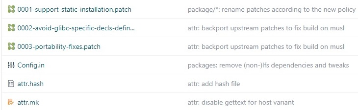

添加新应用
在 Luban SDK 中添加新应用的流程包括配置应用包、源码管理、编译和补丁制作。
如需在 Luban SDK 中添加新的应用，可执行下列步骤：
-
在 package 目录下添加下列必要的文件：
pkg> |-> pkg.mk --> 必须文件，用于定义包的基本信息。 |-> Config.in --> 可选文件，用于配置包的编译选项。 |-> Config.in.host --> 仅 host 工具需要的文件
-
修改上层的 Config.in/Config.in.host。
为了在 menuconfig 中看到包，需要在上层的 Config.in 或 Config.in.host 文件中添加对包的引用。例如：source "package/artinchip/test-uart/Config.in" - 添加应用源码和编译方案。SDK 支持的组件包有以下两种：
-
编译 ArtInChip 自主开发的组件包：需放在 source/artinchip 目录中。
-
编译第三方开源代码包：需下载源码包到 dl/pkg 目录中。
-
编译自开发应用
自开发的应用一般以源码的方式存储，以 test-uart 测试源码为例：
-
创建目录：
mkdir -p package/artinchip/test-uart
-
生成文件：
- test-uart.mk：定义应用构建内容。
- Config.in：配置选项。
-
在 package/artinchip/Config.in 中添加引用。
source "package/artinchip/test-uart/Config.in" -
创建目录 source/artinchip/test-uart， 放置
test-uart示例的源码和 Makefile (CMakeLists.txt) 文件。 -
使用编译命令 make test-uart 进行编译。
-
如有需要，添加补丁，否则可略过。
关于补丁的说明，可查看 制作补丁。
编译三方应用
对于第三方开源代码包，建议从 buildroot2 官网获得相关移植流程说明，以 attr 为例：
-
在 Gitee 上查找 buildroot2 代码库，选择任意一个项目，例如 JakeYang/buildroot。
-
在 package 中找到 attr，并将其下载到 package/third-party/ 目录中。
在 package/third-party/ 中会生成三个文件：patch， Config.in 和 attr.mk。
-
在 package/third-party/Config.in 中添加对 package/third-party/attr/Config.in 文件的引用。
-
打开 attr.mk 文件，查找对应版本的下载地址，示例如下：
ATTR_VERSION = 2.5.1 ATTR_SOURCE = attr-$(ATTR_VERSION).tar.xz ATTR_SITE = http://download.savannah.gnu.org/releases/attr

-
下载源码至 dl/attr/ 目录下。
-
执行 make m 命令，可在 Third-party packages 中看到 attr。
-
应用编译命令 make attr
制作补丁
如对第三方应用进行了适配修改或者补丁修复，则可能需要制作补丁提交至 pacakge 目录。以 ethtool 为例，制作补丁的详细流程说明如下：
-
使用 make m 命令打开配置界面，取消勾选下列选项，以便取消 attr 的预编译使用：
[] use prebuilt binary instead of building from source
-
使用 make ethtool-extract 生成源码，将源码压缩到 source/third-party/ethtool-5.12 目录下。
-
使用 make ethtool-patch 命令，添加现有补丁。
-
进入到源码目录 source/third-party/ethtool-5.12，并建立 Git 仓库。
-
修改代码，提交到本地 Git 仓库，并通过 git format-patch 生成补丁。
-
复制补丁到 package/third-party/attr/ 目录， 并排序。
编译工具示例
不同的应用可能使用不同的编译工具，以下示例仅供参考：
-
Autotools: package/third-party/acl
-
CMake:
-
package/third-party/lzo
-
package/artinchip/*
-
-
Golang: package/third-party/fscrypt注： Golang 编写的源码包依赖文件，可以放置至 dl/vendor 目录中，编译时会优先从该目录中查找是否有所需要的依赖文件。
-
Generic Makefile: package/third-party/bzip2
-
Support Kconfig:
-
uboot
-
linux
-
package/third-party/busybox
-
应用包使用规则
-
包的路径 ：当前 SDK 中，仅支持在下列路径中添加包，并且仅支持新增一级目录：
-
package/artinchip/
-
package/third-party/
可新增一级目录，例如 pacakge/artinchip/foo。
-
-
包的名字：以添加一个名为 foo 的包为例
包的目录名字 必须为 foo ，也可以有 - Config.in 中的名字 必须以 BR2_PACKAGE_ 开头，这里为 BR2_PACKAGE_FOO 包的名字，可以包含 - 或者 _ ，如果使用了中杠，则需要注意： -
包目录名字继续使用中杠
-
相关的变量名字，需要将中杠改为下划线
foo.mk 中的变量名 变量名必须以 FOO 开头，例如 FOO_INSTALL_STAGING = YES -
-
软连接的使用
如果在软件包的安装阶段，需要使用软连接创建目录，则需要添加参数 -n ，如：
ln -snf source_dir_path target_name
-
ln-sf 对重复创建的目标，并不会更新软连接的时间戳，导致重复执行 make pkg-prebuilt，无法检测到安装目录中的软连接目录的变化，导致生成的预编译 二进制包缺漏该软连接。
-
-n：当软连接指向目录时，将其当做一般文件对待。这样重复创建/更新链接时， 相应的时间戳也会更新。
-